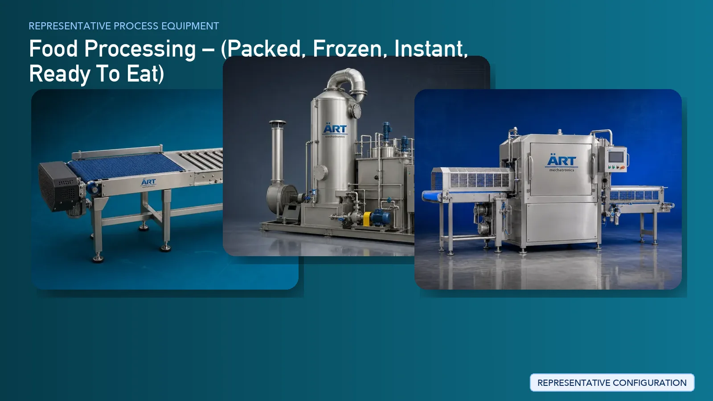

Food Processing Plant & Machinery Solutions (Multi-Category Processed & Frozen Food Systems)
Food processing is a large-scale industrial sector that transforms raw materials such as fruits, vegetables, chicken, pork, goat meat, seafood, plant-based ingredients, and nuts into processed, ready-to-cook, ready-to-eat, and frozen food products.

About Food Processing processing
These products include chips, fries, frozen vegetables, meat products, seafood products, snacks, and packaged foods widely consumed in retail, HoReCa, and export markets.
The process requires strict hygiene, controlled processing conditions, advanced cooking and freezing technologies, and high-speed packaging systems to ensure food safety, shelf life, and consistent quality.
ART Mechatronics provides complete turnkey solutions for food processing plants, offering advanced systems for washing, cutting, processing, cooking, freezing, and packaging. Our solutions are designed for high-capacity production, minimal wastage, and export-quality output across multiple food categories.
Complete Food Process Flow
Raw materials are received from farms, slaughterhouses, or suppliers.
Ensures smooth material flow.
Raw materials are cleaned to remove dirt, blood residues, contaminants, and impurities.
Ensures hygiene and safety.
Defective or contaminated materials are removed.
Produces:
- Uniform sizes
- Ready-to-process material
Product-Specific Processing
🥔 A. Snack Foods (Chips, Fries, Extruded Snacks) Process: Washing → Peeling → Slicing → Frying → Seasoning → Packaging Machines Used:
🥦 B. Frozen Vegetables & Fruits Process: Washing → Cutting → Blanching → Freezing → Packaging Machines Used:
- Blancher
- IQF Freezer (Individual Quick Freezing)
- Freezing Tunnel
Ensures:
- Nutrient retention
- Long shelf life
🍗 C. Meat Processing (Chicken, Pork, Goat) Process: Cutting → Marination → Cooking (optional) → Freezing → Packaging Machines Used:
- Meat Cutter / Grinder
- Mixer / Marinator
- Cooking System
- Freezer
Produces:
- Frozen meat products
- Ready-to-cook items
🐟 D. Seafood Processing Process: Washing → Cleaning → Cutting → Freezing → Packaging Machines Used:
- Seafood Cleaning System
- Cutting System
- IQF Freezer
Ensures:
- Freshness retention
- Export quality
🌱 E. Plant-Based & Ready-to-Eat Products Process: Mixing → Forming → Cooking → Freezing → Packaging Machines Used:
- Mixer
- Forming Machine
- Cooking Line
- Freezing System
🥜 F. Nuts Processing Process: Cleaning → Roasting → Coating → Packaging Machines Used:
- Roaster
- Coating Drum
- Packaging Machine
- Product texture
- Flavor development
- Long shelf life
- Quality preservation
Products are cooled before packaging.
- Clean environment
- Food safety
Suitable for:
- Frozen foods
- Ready-to-eat products
- Retail packs
Machinery Required for Food Processing Plant
- Intake & Conveyor Systems
- Washing Systems
- Sorting & Inspection Systems
- Cutting / Slicing / Dicing Machines
- Meat Processing Machines
- Blancher
- Fryer / Oven / Cooker
- IQF / Blast Freezer
- Mixer / Marinator
- Roaster
- Dust & Air Handling System
- Packaging Machines (FFS, Vacuum, MAP)
Turnkey Food Processing Solutions
ART Mechatronics offers complete turnkey solutions for food processing plants, including:
- Process design & plant layout
- Multi-product processing systems
- Cooking, freezing, and preservation systems
- Hygienic plant design
- Automation & control panels
- Packaging line integration
- Installation & commissioning
- After-sales support
We customize solutions based on:
- Product category
- Production capacity
- Automation level
- Export requirements
Why Choose Art Mechatronics
- Expertise in multi-category food processing systems
- Advanced freezing and cooking technologies
- Hygienic food-grade plant design
- High-capacity automated production
- Minimal product loss
- Global export capability
Machinery in a Food Processing plant
Where it's used
Get pricing & specs for the Food Processing plant
Share the product, target capacity, current process and plant location. These details help our engineers discuss the right machine or line configuration.
One partner, from design to start-up
ART Mechatronics designs, manufactures, installs and commissions your Food Processing solution with regional presence in India, UAE and Thailand.